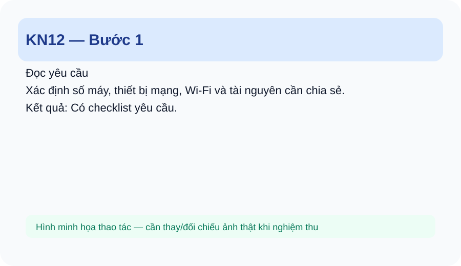
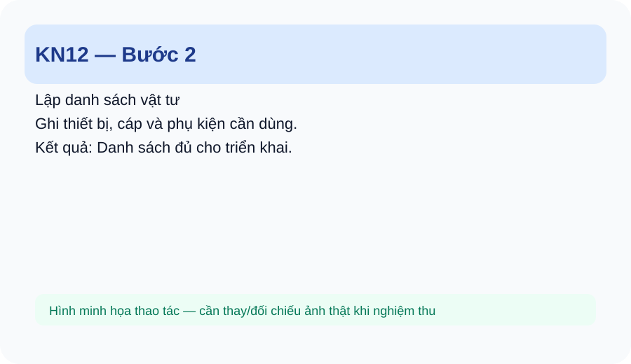
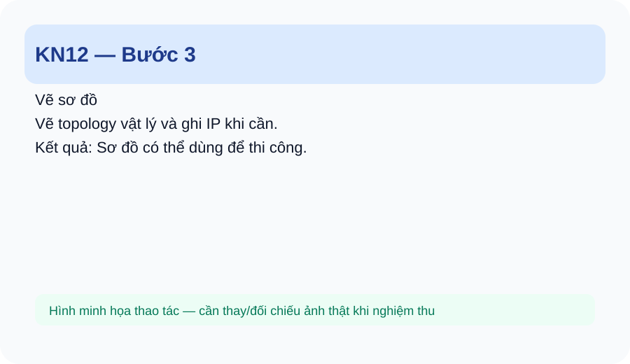
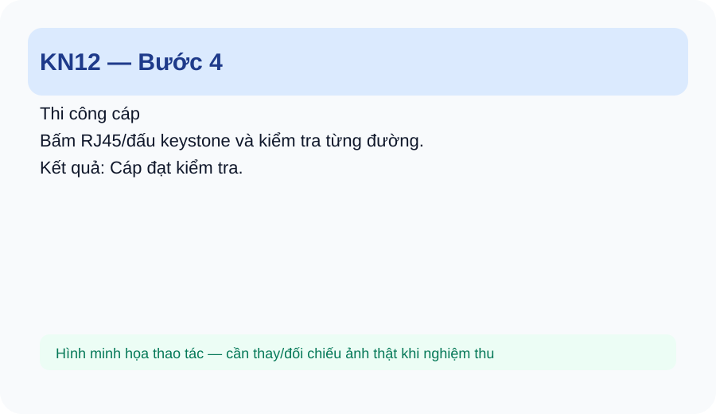
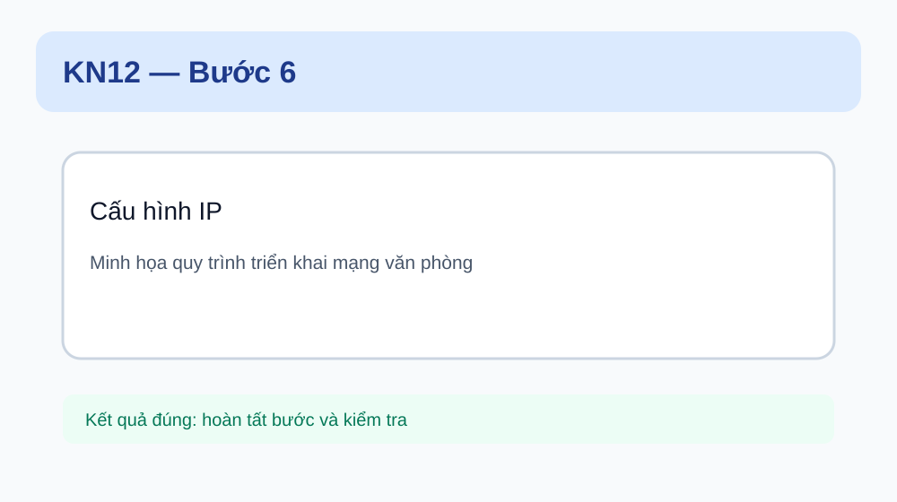
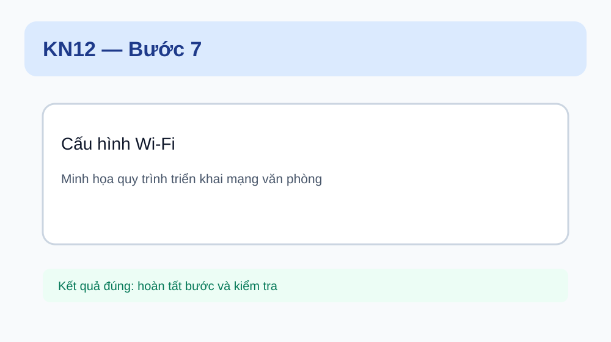
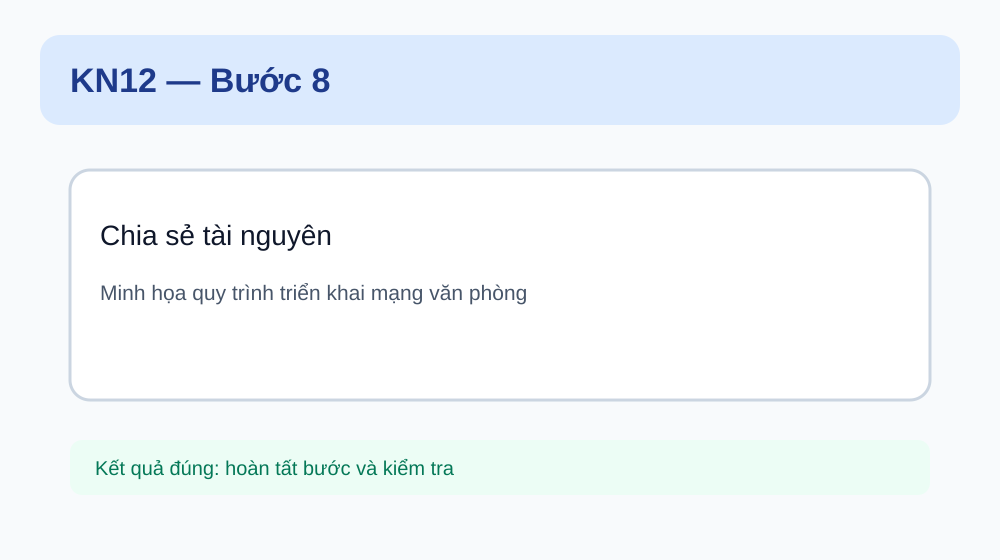
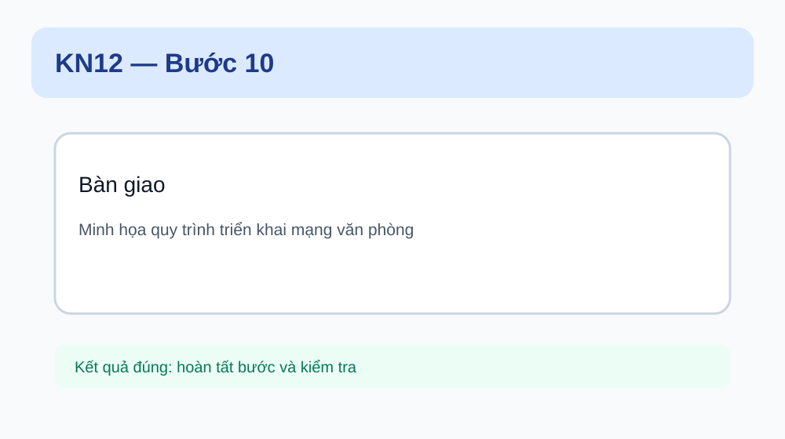

<!doctype html><html lang="vi"><head><meta charset="utf-8"><meta name="viewport" content="width=device-width,initial-scale=1"><title>KN12 — Triển khai mạng văn phòng</title><style>:root{--b:#1d4ed8;--ok:#047857;--w:#b45309;--d:#be123c;--ink:#0f172a;--line:#e2e8f0}*{box-sizing:border-box}body{margin:0;font-family:Inter,Arial,sans-serif;background:#f8fafc;color:var(--ink);line-height:1.65}.wrap{max-width:1080px;margin:auto;padding:22px 16px 60px}.hero{background:linear-gradient(135deg,#0f172a,#1e3a8a);color:white;border-radius:24px;padding:30px;margin-bottom:18px}.hero h1{font-size:clamp(28px,5vw,46px);line-height:1.1;margin:8px 0}.hero p{color:#dbeafe}.nav{position:sticky;top:0;z-index:4;background:#fff;border:1px solid var(--line);padding:10px 14px;border-radius:14px;margin-bottom:18px}.nav a{margin-right:14px;color:#1d4ed8;font-weight:700;text-decoration:none}.box{background:white;border:1px solid var(--line);border-radius:18px;padding:20px;margin:16px 0}.goal{background:#eff6ff;border-left:5px solid var(--b)}.step{border:1px solid #cbd5e1;border-radius:18px;background:#fff;margin:18px 0;overflow:hidden}.step h3{margin:0;padding:15px 18px;background:#f1f5f9}.step .body{padding:18px}.step img{width:100%;max-width:900px;border:1px solid #e2e8f0;border-radius:14px;background:#f8fafc}.ok{background:#ecfdf5;border-left:5px solid var(--ok);padding:12px 15px;border-radius:10px}.wrong{background:#fff1f2;border-left:5px solid var(--d);padding:12px 15px;border-radius:10px}.warn{background:#fff7ed;border-left:5px solid var(--w);padding:12px 15px;border-radius:10px}table{width:100%;border-collapse:collapse;background:white}th,td{border:1px solid #e2e8f0;padding:9px;vertical-align:top}th{background:#f1f5f9}.check{font-size:17px}.small{font-size:14px;color:#475569}@media(max-width:700px){.nav a{display:inline-block;margin:3px 8px 3px 0}.hero{padding:22px}.box{padding:15px}}code{background:#eef2ff;padding:2px 6px;border-radius:6px}</head><body><main class="wrap"><section class="hero"><div>KN12 • KỸ NĂNG NGHỀ</div><h1>Triển khai mạng văn phòng</h1><p>Tích hợp các kỹ năng từ thiết bị, cáp, IP, Wi-Fi, chia sẻ tài nguyên và kiểm tra thành một mạng văn phòng nhỏ.</p></section><nav class="nav"><a href="index.html">Trang chủ</a><a href="_sidebar.md">Lộ trình</a><a href="#steps">Các bước</a><a href="#practice">Thực hành</a><a href="#assessment">Đánh giá</a></nav><section class="box goal"><h2>1. Em sẽ làm được gì?</h2><ul><li>Đọc yêu cầu và lập danh sách thiết bị/vật tư.</li><li>Vẽ sơ đồ mạng văn phòng.</li><li>Lắp đặt và bấm/đấu cáp.</li><li>Cấu hình router/switch/Wi-Fi và IP máy trạm.</li><li>Thiết lập chia sẻ dữ liệu và kiểm tra toàn mạng.</li><li>Lập biên bản kiểm tra/bàn giao ở mức cơ bản.</li></ul></section><section class="box"><h2>2. Chuẩn bị</h2><ul><li>PC, switch, router/AP, cáp UTP, RJ45/keystone.</li><li>Thiết bị kiểm tra cáp.</li><li>Máy tính khách.</li><li>Tình huống văn phòng mẫu và bảng vật tư.</li></ul></section><section class="box"><h2>3. Kiến thức tối thiểu</h2><ul><li>KN01–KN11 ở mức phù hợp nhiệm vụ.</li><li>Topology vật lý.</li><li>IPv4/subnet cơ bản.</li><li>Wi-Fi và bảo mật.</li><li>Chia sẻ dữ liệu/máy in.</li><li>Quy trình kiểm tra và bàn giao.</li></ul></section><section class="box"><h2>4. Nhìn thao tác mẫu</h2><p>Quan sát toàn bộ chuỗi: khảo sát → sơ đồ → vật tư → thi công → cấu hình → kiểm tra → sửa lỗi → bàn giao.</p></section><section id="steps"><h2>5. Làm từng bước</h2><article class="step"><h3>Bước 1. Đọc yêu cầu</h3><div class="body"><p><strong>Em làm:</strong> Xác định số máy, thiết bị mạng, Wi-Fi và tài nguyên cần chia sẻ.</p><p class="small">📷 <strong>Gợi ý ảnh thật:</strong> chụp cận cảnh đúng vị trí tay/dụng cụ/kết quả của bước này.</p><div class="ok"><strong>Kết quả đúng:</strong> Có checklist yêu cầu.</div><div class="wrong"><strong>Nếu sai:</strong> Bỏ sót yêu cầu: quay lại đề bài.</div></div></article><article class="step"><h3>Bước 2. Lập danh sách vật tư</h3><div class="body"><p><strong>Em làm:</strong> Ghi thiết bị, cáp và phụ kiện cần dùng.</p><p class="small">📷 <strong>Gợi ý ảnh thật:</strong> chụp cận cảnh đúng vị trí tay/dụng cụ/kết quả của bước này.</p><div class="ok"><strong>Kết quả đúng:</strong> Danh sách đủ cho triển khai.</div><div class="wrong"><strong>Nếu sai:</strong> Thiếu vật tư: đối chiếu sơ đồ.</div></div></article><article class="step"><h3>Bước 3. Vẽ sơ đồ</h3><div class="body"><p><strong>Em làm:</strong> Vẽ topology vật lý và ghi IP khi cần.</p><p class="small">📷 <strong>Gợi ý ảnh thật:</strong> chụp cận cảnh đúng vị trí tay/dụng cụ/kết quả của bước này.</p><div class="ok"><strong>Kết quả đúng:</strong> Sơ đồ có thể dùng để thi công.</div><div class="wrong"><strong>Nếu sai:</strong> Sơ đồ khó đọc: căn chỉnh và chia khu vực.</div></div></article><article class="step"><h3>Bước 4. Thi công cáp</h3><div class="body"><p><strong>Em làm:</strong> Bấm RJ45/đấu keystone và kiểm tra từng đường.</p><p class="small">📷 <strong>Gợi ý ảnh thật:</strong> chụp cận cảnh đúng vị trí tay/dụng cụ/kết quả của bước này.</p><div class="ok"><strong>Kết quả đúng:</strong> Cáp đạt kiểm tra.</div><div class="wrong"><strong>Nếu sai:</strong> Tester báo lỗi: quay lại KN04.</div></div></article><article class="step"><h3>Bước 5. Lắp thiết bị</h3><div class="body"><p><strong>Em làm:</strong> Đặt router/switch/AP và nối theo sơ đồ.</p><p class="small">📷 <strong>Gợi ý ảnh thật:</strong> chụp cận cảnh đúng vị trí tay/dụng cụ/kết quả của bước này.</p><div class="ok"><strong>Kết quả đúng:</strong> Kết nối vật lý đúng.</div><div class="wrong"><strong>Nếu sai:</strong> Nối nhầm cổng: đối chiếu sơ đồ.</div></div></article><article class="step"><h3>Bước 6. Cấu hình IP</h3><div class="body"><p><strong>Em làm:</strong> Đặt IP/mask/gateway theo phương án.</p><p class="small">📷 <strong>Gợi ý ảnh thật:</strong> chụp cận cảnh đúng vị trí tay/dụng cụ/kết quả của bước này.</p><div class="ok"><strong>Kết quả đúng:</strong> Các máy có cấu hình đúng.</div><div class="wrong"><strong>Nếu sai:</strong> Sai IP: quay lại KN05/KN06.</div></div></article><article class="step"><h3>Bước 7. Cấu hình Wi-Fi</h3><div class="body"><p><strong>Em làm:</strong> Đặt SSID và bảo mật theo yêu cầu.</p><p class="small">📷 <strong>Gợi ý ảnh thật:</strong> chụp cận cảnh đúng vị trí tay/dụng cụ/kết quả của bước này.</p><div class="ok"><strong>Kết quả đúng:</strong> Máy khách kết nối đúng.</div><div class="wrong"><strong>Nếu sai:</strong> Không kết nối: kiểm tra KN10/KN11.</div></div></article><article class="step"><h3>Bước 8. Chia sẻ tài nguyên</h3><div class="body"><p><strong>Em làm:</strong> Thiết lập thư mục/máy in theo yêu cầu.</p><p class="small">📷 <strong>Gợi ý ảnh thật:</strong> chụp cận cảnh đúng vị trí tay/dụng cụ/kết quả của bước này.</p><div class="ok"><strong>Kết quả đúng:</strong> Máy được cấp quyền truy cập đúng.</div><div class="wrong"><strong>Nếu sai:</strong> Lỗi quyền: kiểm tra KN09.</div></div></article><article class="step"><h3>Bước 9. Kiểm tra toàn mạng</h3><div class="body"><p><strong>Em làm:</strong> Kiểm tra cáp, IP, ping, Wi-Fi và tài nguyên.</p><p class="small">📷 <strong>Gợi ý ảnh thật:</strong> chụp cận cảnh đúng vị trí tay/dụng cụ/kết quả của bước này.</p><div class="ok"><strong>Kết quả đúng:</strong> Các hạng mục đạt checklist.</div><div class="wrong"><strong>Nếu sai:</strong> Lỗi phát sinh: ghi lỗi → khoanh vùng → sửa → test lại.</div></div></article><article class="step"><h3>Bước 10. Bàn giao</h3><div class="body"><p><strong>Em làm:</strong> Ghi cấu hình, sơ đồ và kết quả kiểm tra.</p><p class="small">📷 <strong>Gợi ý ảnh thật:</strong> chụp cận cảnh đúng vị trí tay/dụng cụ/kết quả của bước này.</p><div class="ok"><strong>Kết quả đúng:</strong> Có bộ hồ sơ bàn giao tối thiểu.</div><div class="wrong"><strong>Nếu sai:</strong> Thiếu thông tin: đối chiếu checklist dự án.</div></div></article></section><section class="box"><h2>6. Kiểm tra kết quả</h2><ol><li>Đủ thiết bị/vật tư.</li><li>Sơ đồ đúng thực tế.</li><li>Cáp đạt kiểm tra.</li><li>IP đúng.</li><li>Wi-Fi hoạt động.</li><li>Chia sẻ tài nguyên đúng.</li><li>Có kiểm tra và ghi nhận lỗi.</li><li>Có hồ sơ bàn giao tối thiểu.</li></ol></section><section class="box"><h2>7. Lỗi thường gặp và cách sửa</h2><table><tr><th>Lỗi</th><th>Dấu hiệu</th><th>Cách kiểm tra/sửa</th></tr><tr><td>Cáp lỗi</td><td>Tester báo sai/mất cặp.</td><td>Sửa đầu cáp/keystone rồi test lại.</td></tr><tr><td>Sai IP/subnet</td><td>Máy không liên lạc đúng.</td><td>Đối chiếu phương án IP.</td></tr><tr><td>Wi-Fi lỗi</td><td>Không kết nối/không có IP.</td><td>Kiểm tra SSID, bảo mật, DHCP/uplink.</td></tr><tr><td>Share lỗi</td><td>Máy khách không truy cập.</td><td>Kiểm tra mạng rồi Share/NTFS.</td></tr><tr><td>Sơ đồ khác thực tế</td><td>Khó bàn giao.</td><td>Cập nhật sơ đồ theo triển khai thực tế.</td></tr></table></section><section id="practice" class="box"><h2>8. Thực hành 3 mức</h2><ol><li>Làm theo: triển khai một mạng 4 PC + switch + router/AP.</li><li>Tự làm: hoàn thành mạng văn phòng nhỏ theo đề bài.</li><li>Xử lý lỗi: giáo viên chèn 3 lỗi; học sinh tìm, sửa và nghiệm thu lại.</li></ol></section><section class="box"><h2>9. Checklist</h2><ul class="check"><li>☐ Đủ thiết bị/vật tư.</li><li>☐ Sơ đồ đúng thực tế.</li><li>☐ Cáp đạt kiểm tra.</li><li>☐ IP đúng.</li><li>☐ Wi-Fi hoạt động.</li><li>☐ Chia sẻ tài nguyên đúng.</li><li>☐ Có kiểm tra và ghi nhận lỗi.</li><li>☐ Có hồ sơ bàn giao tối thiểu.</li></ul></section><section id="assessment" class="box"><h2>10. Đánh giá năng lực</h2><table><tr><th>Mức</th><th>Yêu cầu</th><th>Minh chứng</th></tr><tr><td>Làm theo</td><td>Hoàn thành từng hạng mục theo mẫu.</td><td>Các hạng mục đúng.</td></tr><tr><td>Tự làm</td><td>Triển khai một mạng văn phòng nhỏ.</td><td>Mạng hoạt động và hồ sơ đầy đủ.</td></tr><tr><td>Xử lý lỗi</td><td>Tìm và sửa lỗi do giáo viên tạo.</td><td>Có quy trình khoanh vùng và test lại.</td></tr></table></section><div class="box small"><strong>Trạng thái:</strong> Draft/Review — nội dung, phiên bản Windows/thiết bị và ngưỡng đánh giá cần giáo viên nghiệm thu trước khi coi là chuẩn chính thức.</div></main></body></html>